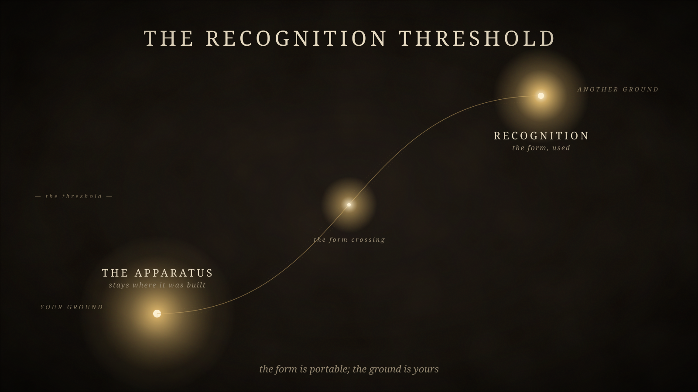

The Recognition Threshold
2026-05-25 · First validated transmission
The article that triggered the Transmission Engine. Why recognition requires the work to be picked up, and how friction-cost determines pickup rate. The piece argues for its own circulation by surfacing what makes circulation possible.

The compression. The article's pattern in one figure.
Read the article
Markdown source
The article in raw form. ~5,000 words.
Whole pattern (SVG)
The compression as standalone vector file.
{kind=link}
Visual assets
Asset previewer
Dark-field view of all visuals, in sequence.
Threshold pattern
Lighter inline pattern (SVG).
Header image
Atmospheric, no text (SVG).
Recognition vs. validation
Secondary pattern (SVG).
Capacity vs. deposit
Source emanating to four deposits (SVG).
Annotated compression
Six numbered callouts for first-time readers.
{kind=link}
{kind=link}
{kind=link}
{kind=link}
Pull-quotes
Validation closes a transaction.
Recognition opens a use.
The lens travels.
The apparatus that built the lens stays where it was built.
The form is portable.
The ground is yours.
{kind=link}
{kind=link}
{kind=link}
Teaching stack — five-frame reveal
A sequential teaching set. Each frame adds one element: Terrain → Apparatus → Form → Recognition → Propagation. Use as a thread, slides, or click-through content.
{kind=link}
{kind=link}
{kind=link}
{kind=link}
{kind=link}
Reference
{kind=link}
Adjacent in the geometry
- Toolkits — Transmission Engine · Gift edge
- The instrument that produced this transmission. Each future article passes through the same pipeline.
- The Meta-Tetrahedron · Self-Knowledge edge
- The operational lens this article is one specific reading of.